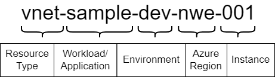
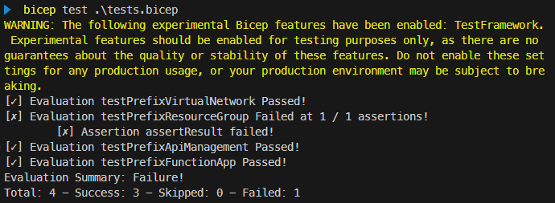

Apply Azure naming convention using Bicep functions

When deploying Azure resources, it’s a good practice to apply a naming convention to your resources. This will help you to identify the purpose of the resource and the environment it belongs to. In this blog post, I will show you how to apply a naming convention using Bicep user-defined functions. This post also includes a short introduction to the (experimental) Bicep Testing Framework.
Table of Contents
Intro
Based on Define your naming convention, I’m using the following naming convention as an example:

The name of a resource consists of the following components:
| Component | Description |
|---|---|
| Resource Type | An abbreviation based on the resource type. For example, vnet for Virtual Network. |
| Workload / Application | The name of the workload or application that the resouce belongs to. For example, myapp for My Application. |
| Environment | An abbreviation based on the environment the resource belongs to. For example, dev for Development. |
| Azure Region | An abbreviation of the region where the resource is deployed. For example, nwe for Norway East. |
| Instance | A unique identifier for the resource. This can be a number like 001 or a named instance like main or primary. |
In the past, I’ve used a Bicep module for applying naming conventions. However, in this post, we’ll leverage a relatively new feature called User-defined functions in Bicep, in conjunction with Imports in Bicep. This approach allows us to create a reusable function that generates resource names based on the specified convention, seamlessly integrating it into our Bicep files.
From a user’s perspective, using a user-defined function appears more elegant than utilizing a module. A function call can be condensed into a single line, whereas invoking a module requires multiple lines of code. Additionally, unlike a function, a module becomes a deployment in Azure, which creates unnecessary noise.
For reference, here’s how you would use a module to retrieve the name of a virtual network based on the naming convention:
module vnetNameBuilder './get-resource-name.bicep' = {
name: 'vnetNameBuilder'
params: {
resourceType: 'virtualNetwork'
workload: 'sample'
environment: 'dev'
region: 'norwayeast'
instance: '001'
}
}
var vnetName = vnetNameBuilder.outputs.resourceName
And here’s how you would do the same with a function:
var vnetName = getResourceName('virtualNetwork', 'sample', 'dev', 'norwayeast', '001')
That being said, creating the logic to apply the naming convention is a bit more difficult in a function than in a module. In a module, you can create a ‘procedural’ script that applies the naming convention step-by-step, using variables for intermediate results. In a function, you can’t use variables; therefore, you have to call other functions to create the logic. This can be a bit more cumbersome.
User-defined Functions
In this section, we’ll explore the various functions required to apply the naming convention. As you’ll discover, much of the logic revolves around creating concise resource names, which is crucial given the limitations on name length. For instance, a Key Vault or Storage Account name can only be 24 characters long, while a Windows virtual machine name is even shorter, capped at 15 characters.
You can find the end result with all functions here.
Get Resource Type Prefix
We’ll begin with the resource type prefix. I’ve used Abbreviation recommendations for Azure resources to create a mapping of resource types to prefixes for resources commonly used in my projects. While I haven’t implemented the complete list, it can be easily extended with your own resource types and corresponding prefixes.
Below is a snippet of the functions to retrieve the prefix.
func getPrefix(resourceType string) string => getPrefixMap()[resourceType]
func getPrefixMap() object => {
apiManagement: 'apim'
keyVault: 'kv'
resourceGroup: 'rg'
storageAccount: 'st'
virtualMachine: 'vm'
virtualNetwork: 'vnet'
...
}
As mentioned before, since we can’t use a variable to store the mapping, I’m using the function getPrefixMap to return the map. This map is then used by getPrefix to retrieve the prefix of the specified resource type. For instance, calling getPrefix('virtualNetwork') will return vnet.
Abbreviate Environment
Similar to the resource type prefix, I’ve created a map of environment names to abbreviations. This map is used by the abbreviateEnvironment function to return the abbreviation of the specified environment. See the snippet below.
func abbreviateEnvironment(environment string) string => getEnvironmentMap()[toLower(environment)]
func getEnvironmentMap() object => {
dev: 'dev'
development: 'dev'
tst: 'tst'
test: 'tst'
acc: 'acc'
acceptance: 'acc'
prd: 'prd'
prod: 'prd'
production: 'prd'
}
Abbreviate Azure Region
Likewise, for the Azure region, I’m using another map to abbreviate it. Below is a snippet of the functions:
func abbreviateRegion(region string) string => getRegionMap()[region]
func getRegionMap() object => {
northeurope: 'ne'
norwayeast: 'nwe'
westcentralus: 'wcus'
westeurope: 'we'
...
}
As there doesn’t seem to be an official list of abbreviations provided by Microsoft, I’ve used Azure Region Abbreviations as my reference. This source offers multiple conventions, so you can select the one that best suits your needs. I’ve chosen the Short Name (CAF) convention as it appears to be the most complete.
Sanitize Resource Name
With these functions as a basis, we can create a simple function that applies the naming convention to a resource name. Here’s an example:
func getResourceNameByConvention(resourceType string, workload string, environment string, region string, instance string) string =>
'${getPrefix(resourceType)}-${workload}-${abbreviateEnvironment(environment)}-${abbreviateRegion(region)}-${instance}'
However, we don’t have complete control over the input values. We’re directly incorporating the workload and instance into the name without any processing. It’s important to sanitize these values to ensure they don’t contain any characters that are not allowed in a resource name.
Here’s a sample function that sanitizes the input values by removing a trailing hyphen, colons, commas, dots, semicolons, underscores, and white spaces. It also converts the result to lowercase.
func sanitizeResourceName(value string) string => toLower(removeTrailingHyphen(removeColons(removeCommas(removeDots(removeSemicolons(removeUnderscores(removeWhiteSpaces(value))))))))
func removeTrailingHyphen(value string) string => endsWith(value, '-') ? substring(value, 0, length(value)-1) : value
func removeColons(value string) string => replace(value, ':', '')
func removeCommas(value string) string => replace(value, ',', '')
func removeDots(value string) string => replace(value, '.', '')
func removeSemicolons(value string) string => replace(value, ';', '')
func removeUnderscores(value string) string => replace(value, '_', '')
func removeWhiteSpaces(value string) string => replace(value, ' ', '')
The sanitizeResourceName function can be used by getResourceNameByConvention to sanitize the input values. Here’s the updated function:
func getResourceNameByConvention(resourceType string, workload string, environment string, region string, instance string) string =>
sanitizeResourceName('${getPrefix(resourceType)}-${workload}-${abbreviateEnvironment(environment)}-${abbreviateRegion(region)}-${instance}')
Shorten Resource Name
For most resources, this approach will suffice. However, a few resources have stricter requirements on name length, and some disallow hyphens. For instance, a Key Vault and Storage Account are limited to a maximum of 24 characters, while a Windows virtual machine’s name can only be up to 15 characters.
To comply with these constraints, we need to shorten the name for these specific resources. First, we’ll need a function to determine if a resource type needs to be shortened. We’ll use an array of resource types that should be shortened and then check if the specified resource type is included in the list. Here are the functions:
func shouldBeShortened(resourceType string) bool => contains(getResourcesTypesToShorten(), resourceType)
func getResourcesTypesToShorten() array => [
'keyVault'
'storageAccount'
'virtualMachine'
]
Next, we’ll need a function to shorten the name. We’ll remove any hyphens and sanitize the resource name. Here’s the function:
func shortenString(value string) string => removeHyphens(sanitizeResourceName(value))
func removeHyphens(value string) string => replace(value, '-', '')
Taking into account the length of the prefix, environment, and region, this is enough for the Key Vault and Storage Account if you keep the combination of workload and instance to about 15 characters.
For a Virtual Machine, we need to make the name even shorter. We can use the uniqueString function to generate a unique string based on the workload, environment, and region. The result won’t be globally unique, but it’s close enough for our purpose. The returned value is 13 characters long. For example, uniqueString('sample', 'dev', 'norwayeast') will result in zmamywx7mjdhw.
I want to include the instance in the resource name, so we need to make the generated unique string a little shorter depending on the length of the instance. Using substring, we can remove the last characters of the unique string based on the length of the instance. Here’s the full function to create the virtual machine name:
func getVirtualMachineName(workload string, environment string, region string, instance string) string =>
'vm${substring(uniqueString(workload, environment, region), 0, 13-length(shortenString(instance)))}${shortenString(instance)}'
As you can see, I’m using the shortenString function to keep the instance name as short as possible. However, please note that if the instance name is longer than 13 characters, the substring function will throw an error. Unfortunately, it’s not yet possible to set a maximum length on parameters of a function.
With this, we can create a function that will return the shortened name of a resource based on the naming convention. Here’s the function:
func getShortenedResourceName(resourceType string, workload string, environment string, region string, instance string) string =>
resourceType == 'virtualMachine'
? getVirtualMachineName(workload, environment, region, instance)
: shortenString(getResourceNameByConvention(resourceType, workload, environment, region, instance))
Get Resource Name
Finally, we can create a function that will return the name of a resource based on the naming convention. This function will check if the resource type should be shortened and then call the appropriate function. Here’s the function:
@export()
func getResourceName(resourceType string, workload string, environment string, region string, instance string) string =>
shouldBeShortened(resourceType)
? getShortenedResourceName(resourceType, workload, environment, region, instance)
: getResourceNameByConvention(resourceType, workload, environment, region, instance)
Note the export decorator. This is required to make the function available to other Bicep files. The final result can be found in naming-conventions.bicep.
Using the Function
To use the function in different Bicep files, I’ve placed the functions in a separate Bicep file. This file can then be imported into other Bicep files. Here’s an example of how to import the getResourceName function from the naming-conventions.bicep file:
import { getResourceName } from './naming-conventions.bicep'
Once the getResourceName function is imported, you can use it in your Bicep files. Here are some examples:
param location string = resourceGroup().location
param workload string
param environment string
param paramExample string = getResourceName('vnet', workload, environment, location, '001')
param varExample string = getResourceName('vnet', workload, environment, location, '002')
resource resourceExample 'Microsoft.Network/virtualNetworks@2023-05-01' = {
name: getResourceName('vnet', workload, environment, location, '003')
location: location
properties: {
...
}
}
output outputExample string = getResourceName('vnet', workload, environment, location, '004')
Testing the Function
There is quite a bit of logic necessary to get a resource name. To ensure everything works as expected, I’ve written some tests with the Bicep Testing Framework. The blog post Exploring the awesome Bicep Test Framework by Dan Rios explains how to use the framework, but I’ll cover the basics here.
Currently, the testing framework is still experimental, so you’ll need to enable it in your Bicep config file. You need to create a bicepconfig.json file and add the following configuration:
{
"experimentalFeaturesEnabled": {
"testFramework": true,
"assertions": true
}
}
Our getResourceName function can’t be directly invoked from a Bicep test. Instead, we’ll need to create a Bicep module that calls the function and asserts the result. To do this, create a file called test-get-resource-name.bicep and add the following Bicep:
// Arrange
import { getResourceName } from './naming-conventions.bicep'
param resourceType string
param workload string
param environment string
param region string
param instance string
param expectedResult string
// Act
var actualResult = getResourceName(resourceType, workload, environment, region, instance)
// Assert
assert assertResult = actualResult == expectedResult
As you can see, the module:
- Imports the function
getResourceName. - Defines parameters for the input values of the function.
- Defines a parameter for the expected result.
- Calls the
getResourceNamefunction. - Asserts that the actual result is equal to the expected result.
Now, create a file called tests.bicep that will contain the tests. Here’s an example of a test that checks if the name of a virtual network is created correctly:
test testPrefixVirtualNetwork 'test-get-resource-name.bicep' = {
params: {
resourceType: 'virtualNetwork'
workload: 'sample'
environment: 'dev'
region: 'norwayeast'
instance: '001'
expectedResult: 'vnet-sample-dev-nwe-001'
}
}
To execute the tests, run the following command:
bicep test .\tests.bicep
The test results will look like this:

In this example the test testPrefixResourceGroup has failed. The output could be improved by adding the actual and expected result. I’m hoping the Bicep team will add this in the future.
You can find the full suite of tests in tests.bicep.
Conclusion
I think User-defined functions in Bicep are a powerful feature to help you create reusable logic, like applying a naming convention. Due to their current limitations, functions can be a bit tricky when creating more complex logic. But for me, using a function to apply a naming convention is a definite improvement over using a module, because it results in much cleaner code.
The Bicep Testing Framework is also a great addition to Bicep. It allows you to write tests for your Bicep files and ensure everything works as expected. I hope the Bicep team will continue to improve the framework and add more features, such as better output for failed tests.